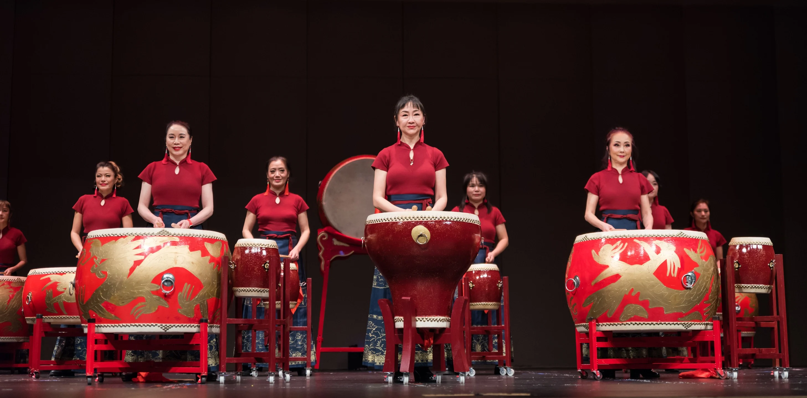

The Bell Church Athletic Club proudly showcases Chinese heritage through lion dance, dragon dance, drumming, and martial arts.
Lion Dance (舞狮)
The Lion Dance is one of the most iconic cultural traditions performed during festivals and grand celebrations. Dancers embody the movements of the lion with precision and energy, accompanied by the sound of drums, cymbals, and gongs. It is believed to chase away evil spirits and bring good fortune, prosperity, and happiness to the community. The lion’s lively expressions and playful gestures captivate audiences, making it a highlight of every cultural gathering.
Dragon Dance (舞龙)
The Dragon Dance is a breathtaking performance symbolizing strength, power, and wisdom. The dragon, an important figure in Chinese mythology, is brought to life by a team of skilled performers who move in perfect harmony. The undulating body of the dragon, paired with rhythmic drumbeats, creates an awe-inspiring spectacle. This dance is performed to invoke prosperity, harmony, and protection, often during Lunar New Year and other significant festivities.

Drum Exhibition (鼓展)
The Drum Exhibition highlights the energy and power of traditional Chinese percussion instruments. Drums are more than instruments—they are the heartbeat of every performance. Each strike echoes discipline, unity, and heritage, energizing both performers and audiences. These exhibitions showcase the strength, timing, and passion of the drummers, creating an atmosphere of excitement and reverence for cultural roots.
Martial Arts (武术)
Martial Arts is not only about combat techniques but also about discipline, respect, and the pursuit of balance between mind and body. Students are trained to develop physical strength, flexibility, and endurance while embracing values such as humility, perseverance, and honor. As a cultural treasure, martial arts performances demonstrate both the beauty and intensity of traditional Chinese fighting styles, inspiring the next generation to uphold this time-honored tradition.